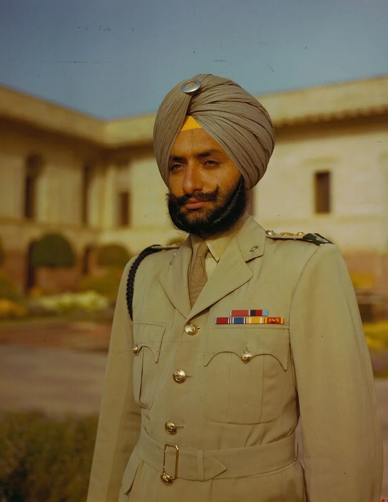
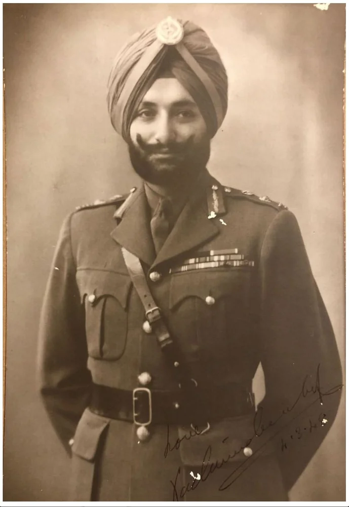
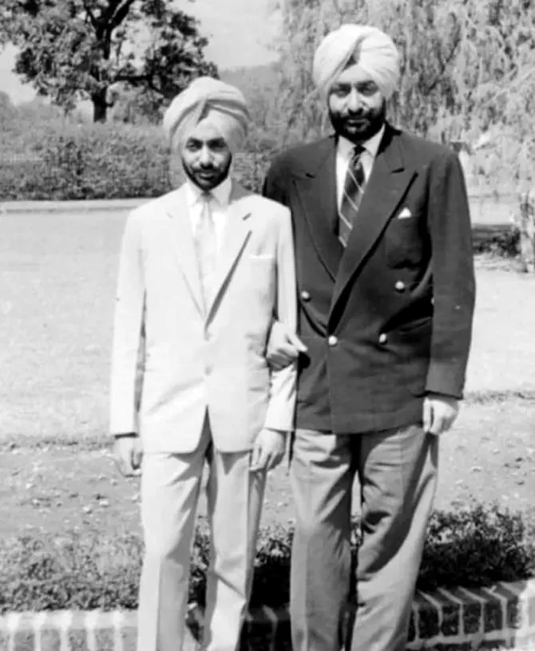
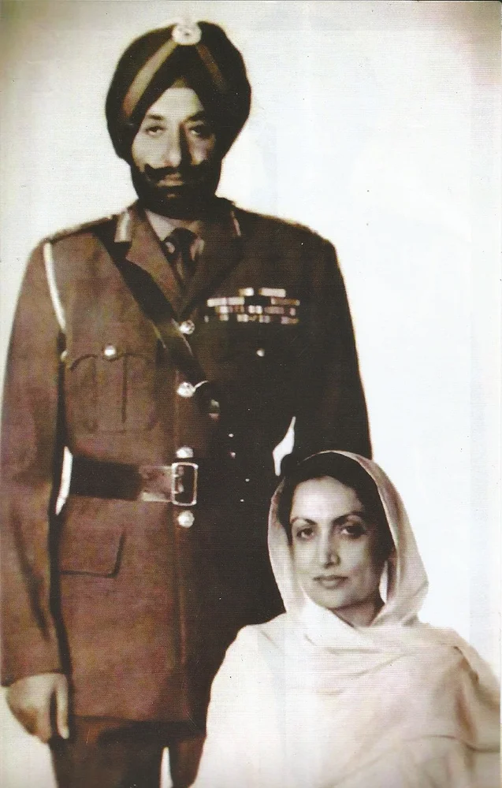
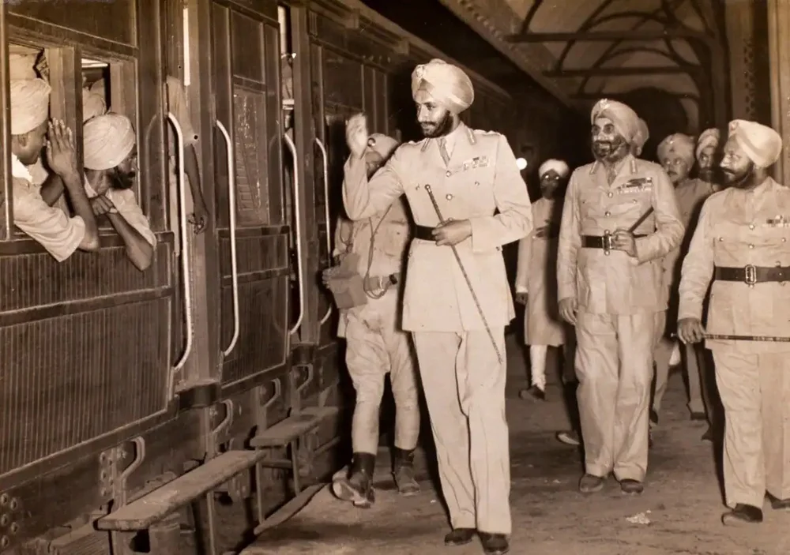
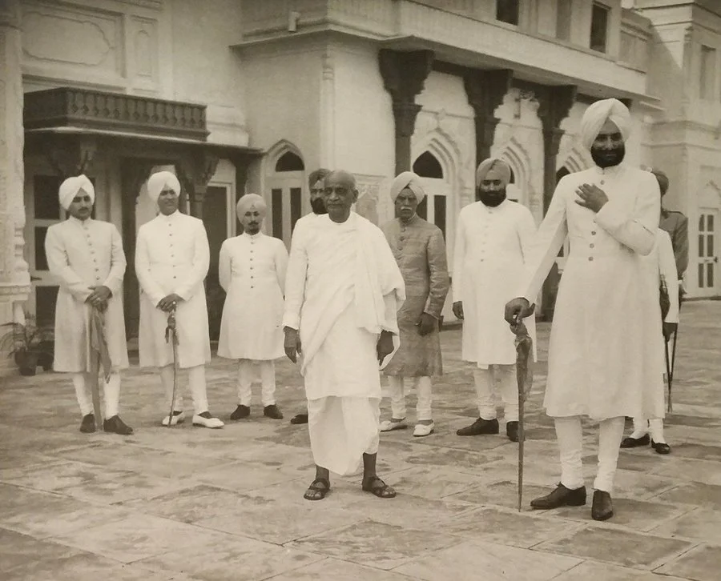
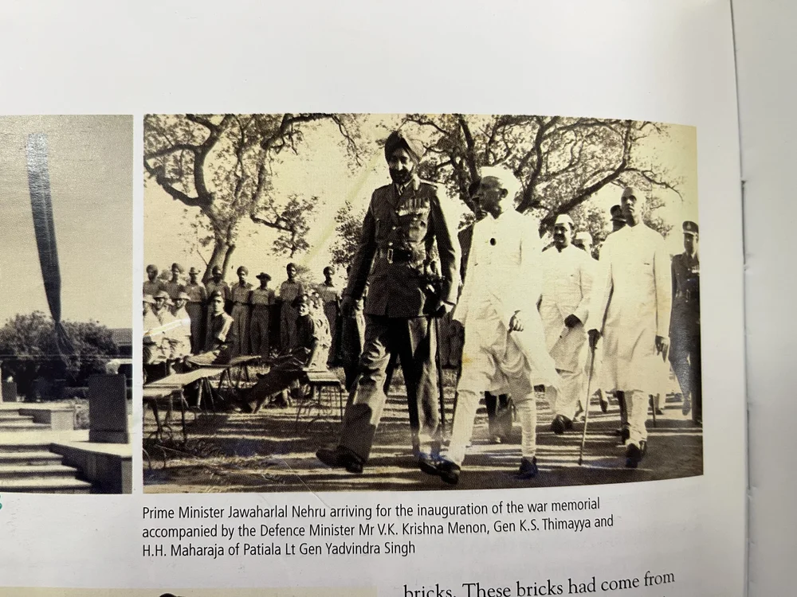

ਮਹਾਰਾਜਾ ਯਾਦਵਿੰਦਰ ਸਿੰਘ







ਸ਼੍ਰੇਣੀ: ਰੈਜੀਮੈਂਟਲ ਆਈਕਨ
ਕਲਾਕਾਰ: ਸਿੱਖ ਰੈਜੀਮੈਂਟਲ ਸੈਂਟਰ
ਸਾਲ: ਇਤਿਹਾਸਕ
1. ਮਹਾਰਾਜਾ ਯਾਦਵਿੰਦਰ ਸਿੰਘ, ਮਹਾਰਾਜਾ ਭੁਪਿੰਦਰ ਸਿੰਘ ਦੇ ਵੱਡੇ ਪੁੱਤਰ, ਜੀਸੀਐਸਆਈ, ਜੀਸੀਆਈਈ, ਜੀਸੀਵੀਓ, ਜੀਬੀਈ, ਪਟਿਆਲਾ ਰਿਆਸਤ (1900-1938) ਸਿੱਖ ਰੈਜੀਮੈਂਟ ਦੇ ਇੱਕ ਪ੍ਰਮੁੱਖ ਪ੍ਰਤੀਕ ਹਨ। ਉਹ 23 ਮਾਰਚ 1938 ਨੂੰ ਮਹਾਰਾਜਾ ਬਣਿਆ ਅਤੇ ਪਟਿਆਲਾ ਦਾ ਨੌਵਾਂ ਅਤੇ ਆਖਰੀ ਸ਼ਾਸਕ ਮਹਾਰਾਜਾ (1938-1971) ਸੀ। ਉਹ ਵੀ ਸੀ ਇੱਕ ਡਿਪਲੋਮੈਟ, ਖੇਡ ਪ੍ਰਸ਼ਾਸਕ ਅਤੇ ਕ੍ਰਿਕਟਰ। 1914 ਵਿੱਚ ਪਟਿਆਲਾ ਵਿਖੇ ਜਨਮੇ ਮਹਾਰਾਜਾ ਯਾਦਵਿੰਦਰਾ ਨੇ ਲਾਹੌਰ ਦੇ ਐਚੀਸਨ ਕਾਲਜ ਵਿੱਚ ਪੜ੍ਹਾਈ ਕੀਤੀ। ਉਸਨੇ ਪਟਿਆਲਾ ਸਟੇਟ ਪੁਲਿਸ ਵਿੱਚ ਸੇਵਾ ਕੀਤੀ, ਇਸਦੇ ਇੰਸਪੈਕਟਰ ਜਨਰਲ ਬਣੇ ਅਤੇ ਦੂਜੇ ਵਿਸ਼ਵ ਯੁੱਧ ਦੌਰਾਨ ਮਲਾਇਆ, ਇਟਲੀ ਅਤੇ ਬਰਮਾ ਵਿੱਚ ਸੇਵਾ ਕੀਤੀ।
2. ਪਟਿਆਲੇ ਦੇ ਗੱਦੀ 'ਤੇ ਚੜ੍ਹਨ ਤੋਂ ਬਾਅਦ, ਯਾਦਵਿੰਦਰਾ ਨੇ 1943 ਤੋਂ 1944 ਤੱਕ ਚੈਂਬਰ ਆਫ਼ ਪ੍ਰਿੰਸੀਜ਼ ਦੇ ਚਾਂਸਲਰ ਵਜੋਂ ਸੇਵਾ ਕਰਦੇ ਹੋਏ, ਇੱਕ ਸਿਆਸੀ ਅਤੇ ਕੂਟਨੀਤਕ ਕੈਰੀਅਰ ਅਪਣਾਇਆ।
3. 1947 ਵਿੱਚ, ਜਦੋਂ ਭਾਰਤ ਨੂੰ ਆਜ਼ਾਦੀ ਮਿਲੀ, ਉਹ ਚੈਂਬਰ ਆਫ਼ ਪ੍ਰਿੰਸੀਜ਼ ਦੇ ਪ੍ਰੋ-ਚਾਂਸਲਰ ਸਨ ਅਤੇ ਸਰਦਾਰ ਵੱਲਭ ਭਾਈ ਪਟੇਲ ਦੇ ਨਾਲ, ਰਿਆਸਤਾਂ ਦੇ ਭਾਰਤ ਵਿੱਚ ਰਲੇਵੇਂ ਵਿੱਚ ਇੱਕ ਪ੍ਰਮੁੱਖ ਭੂਮਿਕਾ ਨਿਭਾਈ। ਯਾਦਵਿੰਦਰਾ ਨੇ ਬਾਅਦ ਵਿੱਚ ਭਾਰਤੀ ਓਲੰਪਿਕ ਸੰਘ ਦੇ ਪ੍ਰਧਾਨ, ਭਾਰਤੀ ਦੇ ਚੇਅਰਮੈਨ ਵਜੋਂ ਸੇਵਾ ਨਿਭਾਈ ਬਾਗਬਾਨੀ ਵਿਕਾਸ ਕੌਂਸਲ, ਭਾਰਤੀ ਕ੍ਰਿਕਟ ਕੰਟਰੋਲ ਬੋਰਡ (ਬੀ.ਸੀ.ਸੀ.ਆਈ.) ਦੇ ਪ੍ਰਧਾਨ ਅਤੇ ਸੰਯੁਕਤ ਰਾਸ਼ਟਰ ਮਹਾਸਭਾ, ਯੂਨੈਸਕੋ ਅਤੇ FAO ਵਿੱਚ ਕਈ ਭਾਰਤੀ ਪ੍ਰਤੀਨਿਧ ਮੰਡਲਾਂ ਦੀ ਅਗਵਾਈ ਕੀਤੀ। ਉਸਨੇ ਇਟਲੀ ਵਿੱਚ ਭਾਰਤੀ ਰਾਜਦੂਤ (1965-1966) ਅਤੇ 1971 ਤੋਂ ਨੀਦਰਲੈਂਡ ਵਿੱਚ ਭਾਰਤੀ ਰਾਜਦੂਤ ਵਜੋਂ ਵੀ ਕੰਮ ਕੀਤਾ। 17 ਜੂਨ 1974 ਤੱਕ, ਜਦੋਂ ਉਹ 60 ਸਾਲ ਦੀ ਉਮਰ ਵਿੱਚ ਦਿਲ ਦੀ ਅਸਫਲਤਾ ਤੋਂ ਹੇਗ ਵਿਖੇ ਦਫਤਰ ਵਿੱਚ ਅਚਾਨਕ ਅਕਾਲ ਚਲਾਣਾ ਕਰ ਗਿਆ। ਉਸ ਸਮੇਂ ਦੀ ਪ੍ਰਧਾਨ ਮੰਤਰੀ ਇੰਦਰਾ ਗਾਂਧੀ ਦੀਆਂ ਖਾਸ ਹਦਾਇਤਾਂ 'ਤੇ, ਉਸ ਦਾ ਪੂਰੇ ਸਰਕਾਰੀ ਸਨਮਾਨਾਂ ਨਾਲ ਸਸਕਾਰ ਕੀਤਾ ਗਿਆ।
4. ਉਸਦੀ ਸਦੀਵੀ ਵਿਰਾਸਤ ਵਿੱਚ ਲਾਲ ਬਾਗ ਪੈਲੇਸ ਵਿਖੇ ਸਥਿਤ ਯਾਦਵਿੰਦਰਾ ਪਬਲਿਕ ਸਕੂਲ ਸ਼ਾਮਲ ਹੈ, ਜਿਸ ਨੂੰ ਮਹਾਰਾਜਾ ਯਾਦਵਿੰਦਰਾ ਸਿੰਘ ਨੇ ਦਾਨ ਕੀਤਾ ਸੀ। ਯਾਦਵਿੰਦਰਾ ਪਬਲਿਕ ਸਕੂਲ, ਮੋਹਾਲੀ ਦਾ ਨਾਮ ਵੀ ਉਹਨਾਂ ਦੇ ਨਾਮ ਤੇ ਰੱਖਿਆ ਗਿਆ ਹੈ ਅਤੇ ਉਹਨਾਂ ਦੇ ਪਰਿਵਾਰ ਦੇ ਮੈਂਬਰਾਂ ਦੁਆਰਾ ਸਥਾਪਿਤ ਕੀਤਾ ਗਿਆ ਸੀ। 1956 ਵਿੱਚ, ਉਸਨੇ ਇੱਕ 150 ਆਨੰਦ ਭਵਨ ਵੀ ਦਾਨ ਕੀਤਾ ਬੀਘਾ ਪੈਲੇਸ, ਗਰੀਬ ਬੱਚਿਆਂ ਲਈ ਛੁੱਟੀਆਂ ਦਾ ਘਰ ਸਥਾਪਤ ਕਰਨ ਲਈ ਸਰਕਾਰ ਨੂੰ.
5. ਮਹਾਰਾਜਾ ਯਾਦਵਿੰਦਰ ਸਿੰਘ ਨੂੰ 17 ਜੁਲਾਈ 1954 ਨੂੰ ਸਿੱਖ ਰੈਜੀਮੈਂਟ ਦਾ ਆਨਰੇਰੀ ਕਰਨਲ ਨਿਯੁਕਤ ਕੀਤਾ ਗਿਆ ਸੀ, ਇਸ ਤਰ੍ਹਾਂ ਰੈਜੀਮੈਂਟ ਨਾਲ ਪਟਿਆਲਾ ਦੇ ਸ਼ਾਸਕਾਂ ਦੀ ਤੀਜੀ ਪੀੜ੍ਹੀ ਦਾ ਸਬੰਧ ਜਾਰੀ ਰਿਹਾ। ਮੇਰਠ ਵਿਖੇ ਕੇਂਦਰ, ਖਾਸ ਤੌਰ 'ਤੇ ਜੰਗੀ ਯਾਦਗਾਰ ਬਣਾਉਣ ਵਿਚ ਮਹਾਰਾਜਾ ਦੀ ਭੂਮਿਕਾ ਸੀ ਗੁਰਦੁਆਰਾ ਸਾਹਿਬ, ਪੰਡਿਤ ਜਵਾਹਰ ਲਾਲ ਨਹਿਰੂ, ਪ੍ਰਧਾਨ ਮੰਤਰੀ ਦੀ ਹਾਜ਼ਰੀ ਵਿੱਚ। ਉਸਦੀ ਸਦਾ ਇਛੁੱਕ ਮਾਰਗਦਰਸ਼ਨ ਤਾਕਤ ਦਾ ਥੰਮ ਸੀ ਜਿਸ ਨੇ 15 ਅਪ੍ਰੈਲ 1968 ਨੂੰ ਇਤਿਹਾਸਕ ਰੰਗੀਨ ਪੇਸ਼ਕਾਰੀ ਪਰੇਡ ਦੀ ਸਹਾਇਤਾ ਕੀਤੀ ਜਿਸਦੀ ਭਾਰਤ ਦੇ ਰਾਸ਼ਟਰਪਤੀ ਡਾ: ਜ਼ਾਕਿਰ ਹੁਸੈਨ ਦੁਆਰਾ ਸਮੀਖਿਆ ਕੀਤੀ ਗਈ ਸੀ।

ਮੋਬਾਈਲ 'ਤੇ ਖੋਲ੍ਹੋ
ਆਪਣੇ ਫ਼ੋਨ 'ਤੇ ਇਸ ਕਲਾ ਰਿਕਾਰਡ ਨੂੰ ਦੇਖਣ ਲਈ ਸਕੈਨ ਕਰੋ।